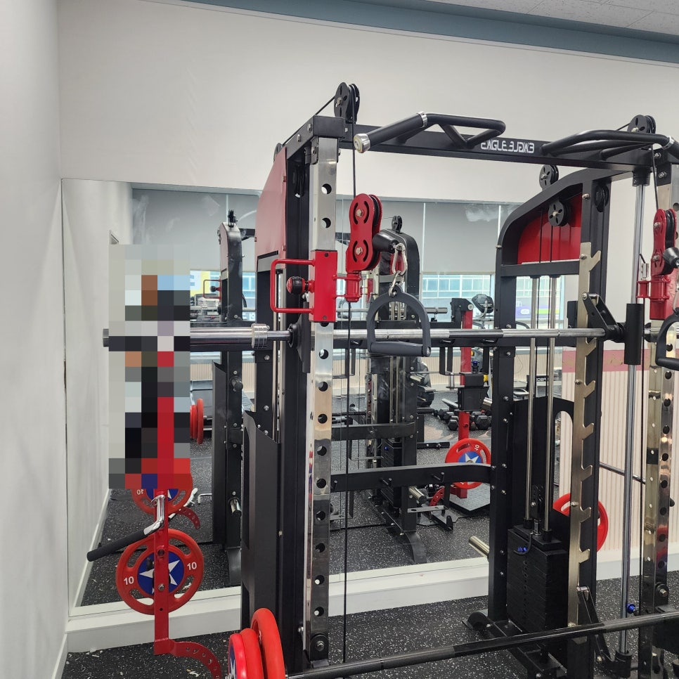
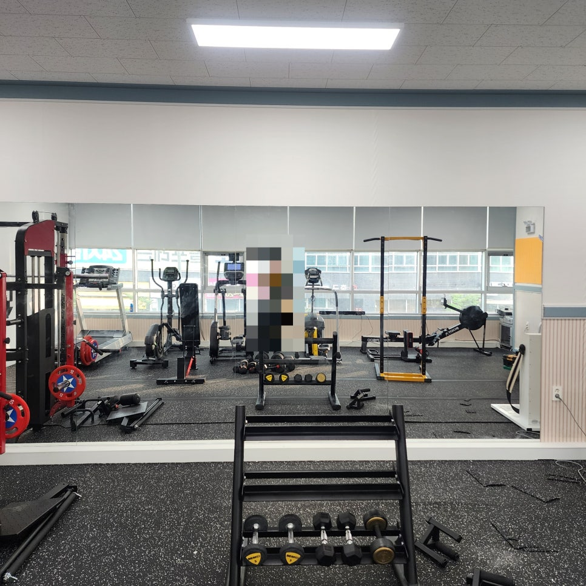
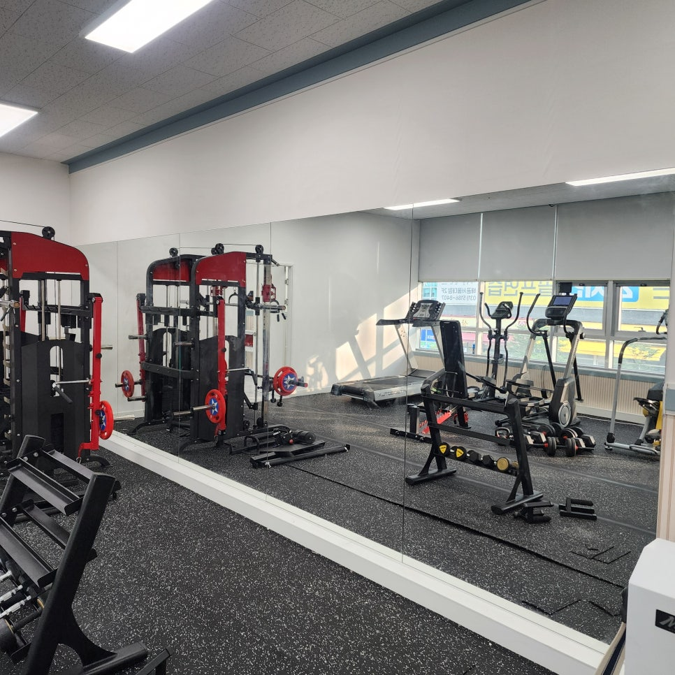

대형벽거울은 빈 벽에 붙이는 경우가 대부분이지만, 이번 경기 시흥 현장은 회사 운동실에 기구가 모두 자리 잡은 뒤였습니다. 기구는 거의 옮기지 않고 통로만 비워 5mm 은색 거울 다섯 장을 이어 붙였고, 스미스머신 뒤쪽 벽까지 거울이 닿게 했습니다.
한눈에 보기
| 작업 | 운동실 거울 작업 |
|---|---|
| 지역 | 경기 시흥시 배곧동 |
| 장소 | 회사 내 운동실 |
| 거울 | 5T 은경 5장 |
| 현장 조건 | 운동기구 반입 후 시공 |




기구가 놓인 운동실에도 대형벽거울을 붙일 수 있나요?
거울 자리 앞에 스미스머신과 덤벨 랙이 이미 놓여 있었습니다. 이런 기구는 무거워서 통째로 빼내기 어렵습니다.
그래서 기구는 그대로 두고, 거울을 들고 지나갈 통로와 붙일 자리만 먼저 비운 뒤 작업했습니다.
작업 순서
- 기구 사이로 거울을 옮길 통로와 작업 공간을 확보했습니다.
- 벽 길이에 맞춰 가능한 한 큰 판으로 나눠 다섯 장으로 구성했습니다.
- 스미스머신 뒤쪽 벽까지 거울을 이어 붙여, 기구 안에서도 자세가 보이게 했습니다.
- 마무리 후에는 맞은편 창과 기구가 거울에 비쳐 실제보다 공간이 넓어 보입니다.
운동거울은 어떤 종류가 좋나요?
은경은 색을 넣지 않은 일반 은색 거울이라 비친 모습이 그대로 보입니다. 브론즈경이나 흑경보다 운동 자세를 확인하기에 알맞습니다.
5T는 두께 5mm라는 뜻이고, 벽에 크게 붙이는 거울에 가장 많이 쓰는 두께입니다.
대형벽거울 가격은 어떻게 정해지나요?
거울은 1자(30×30cm) 단위로 계산하며, 보통 1자당 6천~1만 원입니다. 시공비와 부자재비를 포함한 기준입니다.
붙이는 면적이 넓을수록 1자당 단가는 내려갑니다.
자주 묻는 질문
- Q. 운동기구를 전부 빼야 거울 작업이 되나요?
- 아닙니다. 이 현장처럼 운반 통로와 붙일 자리만 확보하면 기구를 그대로 둔 채 시공할 수 있습니다.
- Q. 헬스거울 두께는 몇 mm가 알맞나요?
- 벽에 크게 붙이는 거울은 5mm(5T)를 가장 많이 씁니다. 이 현장도 5T 은경을 썼습니다.